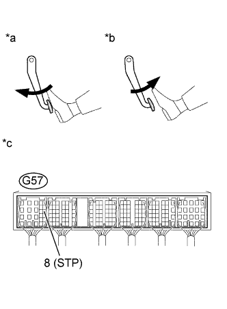

DTC P0724 Высокий уровень сигнала в цепи выключателя тормоза "B" |
| Режим поездки при обнаружении DTC | Условие обнаружения DTC | Неисправный участок |
| 5 раз разгоните автомобиль до скорости не менее 30 км/час (19 миль в час), нажмите педаль тормоза и уменьшите скорость автомобиля до величины не более 3 км/час (1,8 мили в час). | Выключатель стоп-сигналов остается включенным, даже если автомобиль 5 раз двигался в режиме GO (скорость не менее 30 км/час (19 или в час)) – STOP (скорость менее 3 км/час (1,8 мили в час)) (логика диагностирования за 2 поездки). |
|
| № DTC | Параметры из Data List |
| P0724 | Stop Light Switch |
| 1.СНИМИТЕ ПОКАЗАНИЯ ПОРТАТИВНОГО ДИАГНОСТИЧЕСКОГО ПРИБОРА (ВЫКЛЮЧАТЕЛЬ СТОП-СИГНАЛОВ) |
Подсоедините портативный диагностический прибор к DLC3.
Включите зажигание (IG).
Войдите в следующие меню: Powertrain / Engine and ECT / Data List / Stop Light Switch.
Считайте значение, отображаемое на диагностическом приборе при нажатой и отпущенной педали тормоза.
| Педаль тормоза | Дисплей |
| Отпущена | OFF (ВЫКЛ) |
| Нажата | ON (ВКЛ) |
|
| ||||
|
| ||||
| 2.ПРОВЕРЬТЕ ВЫКЛЮЧАТЕЛЬ СТОП-СИГНАЛОВ В СБОРЕ |
Проверьте выключатель стоп-сигналов в сборе (Нажмите здесь).
|
| ||||
| OK | |
| 3.ПРОВЕРЬТЕ ECM (НАПРЯЖЕНИЕ НА КОНТАКТЕ STP) |
|  |
Отсоедините разъем ЭБУ.
Включите зажигание (IG).
Измерьте напряжение в соответствии со значениями, приведенными в таблице.
| Контакты для подключения диагностического прибора | Состояние педали тормоза | Заданные условия |
| G57-8 (STP) - масса | Отпущена | 0 - 3 В |
| Нажата | 11 - 14 В |
| *a | Педаль тормоза нажата |
| *b | Педаль тормоза отпущена |
| *c | Устройство с подсоединенным жгутом проводов (ECM) |
Подсоедините разъем ECM.
|
| ||||
| OK | |
| 4.ЗАМЕНИТЕ ECM |
Замените ECM (Нажмите здесь).
|
| ||||
| 5.ЗАМЕНИТЕ ВЫКЛЮЧАТЕЛЬ СТОП-СИГНАЛОВ В СБОРЕ |
Замените выключатель стоп-сигналов в сборе (Нажмите здесь).
|
| ||||
| 6.ОТРЕМОНТИРУЙТЕ ИЛИ ЗАМЕНИТЕ ЖГУТ ПРОВОДОВ ИЛИ РАЗЪЕМ |
Отремонтируйте или замените жгут проводов или разъем.
| ДАЛЕЕ | |
| 7.ПРОВЕРЬТЕ, УСТРАНЕНА ЛИ ДОЛЖНЫМ ОБРАЗОМ НЕИСПРАВНОСТЬ |
Подсоедините портативный диагностический прибор к DLC3.
Удалите коды DTC (Нажмите здесь).
Выключите зажигание и подождите не менее 30 с.
Включите зажигание (IG) и портативный диагностический прибор.
Запустите двигатель.
Не менее 5 раз разгоните автомобиль до скорости не менее 30 км/час (19 миль в час), нажмите педаль тормоза и уменьшите скорость автомобиля до величины не более 3 км/час (1,8 мили в час).
Убедитесь, что DTC не выводится снова.
Войдите в следующие меню: Powertrain / Engine and ECT / Utility / All Readiness.
Введите DTC P0724.
Убедитесь, что для параметра STATUS (состояние) отображается значение NORMAL (нормальное).
| ДАЛЕЕ | ||
| ||